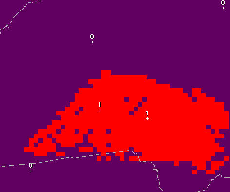
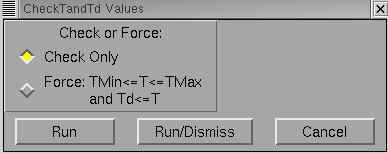

CheckTandTd
Introduction
The
CheckTandTd procedure is intended to
be a final check on the
Temperature (T) and Dew Point (Td) grids. The tool checks that the
following meteorological conditions are maintained throughout the
forecast database:
MinT <=
T <= MaxT
Td <=
T
Optionally,
the tool can be run to show the time and area over which the above
conditions are violated.
How
the Procedure Works
The
CheckTandTd procedure begins by retrieving all of the MinT, MaxT, T,
and Td grid inventory. These timeRanges are used later throughout
the code, and allow the tool to work in any time zone. Next, each
MinT grid and all T grids that correspond to the associated MinT
timeRange are retrieved. Using numpy, each T grid is
compared with the MinT grid to identify where T grid points are lower
than the MinT grid. A temporary grid is created (named TLessThanMin)
that highlights where this condition is met by flagging the grid with
a value of one (1). All other points are set to zero. An example of
the resulting “Highlight” grid is shown in Fig. 1. The points
that are set to one (appearing red by default) are used to create an
editArea, whereby a SmartTool can be called to set the T grid points
to the MinT grid values where T < MinT.

Fig.
1. Example of theTLessThanMin “Highlight” grid, with grid points
shaded in red where the T is less than the corresponding Minimum T.
An
identical set of steps is performed on the T grids again, but in this
case the MaxT grid is used for comparison, and a temporary highlight
grid (named TGreaterThanMax) is created. All grid points with T
greater than MaxT at the same point and time are used to make the
editArea. A different SmartTool is called to set the T grid points to
the MaxT grid values where T > MaxT.
Finally,
a third check is performed to ensure that the Td grids are always at
or below the T grid for the same point and time period. The same
steps are performed as in the previous two checks, and the resulting
highlight grid (TdGreaterThanT) shows where the Td grids are greater
than the T grids. Anywhere/time the Td grid points are greater than
the T grid, a SmartTool is called to adjust the Td to the T value.
Running
the Procedure
When
the Procedure is envoked, users are presented with two options:
“Check Only” and “Force” (see Fig. 2). The CheckOnly option
will not modify any grids. It will simply generate the respective
highlight grids at times where the T or Td grids violate the
meteorological checks. Forecasters may examine these grids to get a
better idea of where and when the grids are inconsistent.

Fig.
2. The CheckTandTd Tool GUI.
The
second option, Force, will run the set of SmartTools that maintain
balance between the MinT, MaxT and T grids and between the T and Td
grids. Selecting this option and running the tool will likely cause
many T grids to be modified. Any grids that are locked by other
forecasters will, of course, not be modified, so it is important that
you make sure the entire set of T and Td grids are saved (unlocked)
before running this tool.
No
special configuration is required with this tool.